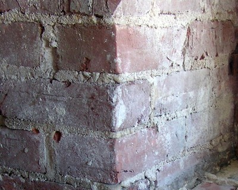

Lime mortar [MOL]
Mortar between masonry units consists of a mix of lime putty and sand. It is characterized by a light beige colour. Lime mortar is a low-strength (weak) mortar, and it can be easily scratched (removed) from the wall using a sharp tool (like a key). Lime mortar can be found in older buildings, mostly fired clay masonry construction.

Fired clay brick masonry in lime mortar, Canada (Ojdrovic Engineering)